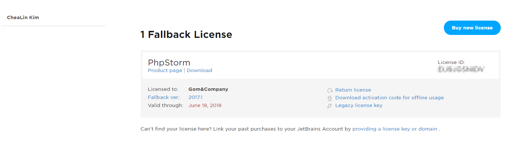
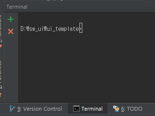
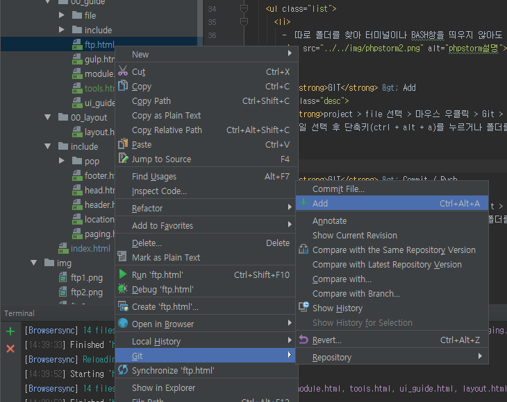

🐌 PhpStorm
🍳 초기 설정
-
- 지원팀에 본인 계정에 대해 PhpStorm 라이센스 요청. 보내주시는 링크에 접속해 라이센스 활성화를 진행한다.
활성화된 라이센스는 해당 링크에서 확인 가능하다. (https://account.jetbrains.com/licenses)
 - - PhpStorm을 실행해 위에서 라이센스 활성화 완료된 계정으로 로그인한다.
🍳 TIP
- - 따로 폴더를 찾아 터미널이나 BASH창을 띄우지 않아도 하단 Terminal을 클릭하면 해당 폴더경로의 터미널창이 열린다. 
-
- GIT > Add
project > file 선택 > 마우스 우클릭 > Git > Add (단축키: ctrl + alt + a)
여러 파일 선택 혹은 폴더를 선택해 한번에 추가할 수도 있다.  -
- GIT > Commit / Push
VCS > Commit Changes
Commit 단축키: ctrl + K
Commit + Push 단축키: ctrl + shift + K

-
- Commit Changes 창
① git add되어 스테이지에 올라간 파일 리스트
② commit 옵션 및 commit 전/후 작업 추가 선택
③ commit 메세지 입력
④ 이전 commit된 파일과 변경 사항 비교
* 하단의 commit버튼에 마우스 오버 시 commit or commit + push 등을 선택할 수 있다.
- - PhpStorm으로 Git을 좀 더 활용하고 싶다면 https://wit.nts-corp.com/2017/04/12/4399 참고